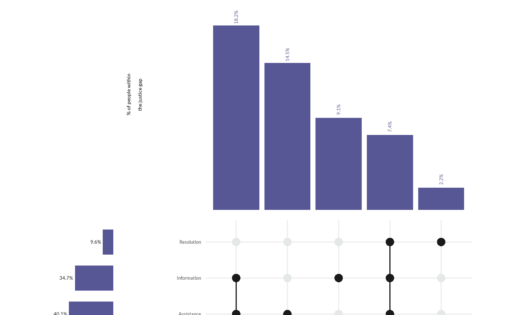

![[Experimental]](figures/lifecycle-experimental.svg)
wjp_upset() draws an UpSet chart, the alternative to Venn diagrams for
many overlapping sets: one bar per intersection of sets (e.g., the unmet
needs that people report together), a matrix of dots below the bars that
shows which sets form each intersection, and the size of every set as a
horizontal bar on the left. Unlike ComplexUpset, which returns a
patchwork of several plots, wjp_upset() returns a single ggplot, so the
WJP theme, fonts, and wjp_drawn() apply to the whole chart.
Usage
wjp_upset(
data,
intersections,
sets = NULL,
target,
labels = NULL,
set_target = NULL,
set_labels = NULL,
order = NULL,
bar_color = "#482d8b",
dot_colors = c("#1A1A1A", "#E5E8E8"),
label_angle = 90,
sep = " + ",
width = 468,
height = 388.8,
spacing = 10.7,
set_width_ratio = 0.22,
bar_ratio = 2/3,
bar_headroom = 1.25,
y_title = NULL,
title_size = 10.75,
title_colour = "#000000",
label_size = 10,
label_colour = "#4D4D4D",
label_gap = 4.33,
value_size = 10,
value_colour = NULL,
value_fontface = "plain",
set_value_size = 10,
set_value_colour = "#1A1A1A",
dot_radius = 4,
segment_color = "#000000",
segment_width = 1.04,
grid_color = "#EBEBEB",
grid_width = 1.04,
ptheme = WJP_theme()
)Arguments
- data
Data frame with one row per intersection.
- intersections
String. Column name with the sets of each intersection (string separated by
sep, or a list column).- sets
Set names from top to bottom:
NULL(default; order of first appearance inintersections), a character vector, or a data frame whose first column holds the set names.- target
String. Column name with the value of each intersection.
- labels
String. Column name with the printed value of each intersection. Default is
NULL(no values).- set_target
String. Column of
sets(a data frame) with the size of each set. Default isNULL(sum of the intersections).- set_labels
String. Column of
sets(a data frame) with the printed size of each set. Default isNULL(no size labels).- order
String. Column name with the display order of the intersections (left to right). Default is
NULL(data order).- bar_color
String. Color of the intersection and set bars. Default is the WJP primary color
"#482d8b".- dot_colors
Character vector of length 2 with the colors of the active and inactive dots of the matrix. Default is
c("#1A1A1A", "#E5E8E8").- label_angle
Numeric. Angle of the intersection values. Default is
90(vertical, reading upwards);0prints them horizontally above the bars.- sep
String. Separator of the set names in
intersections. Default is" + ".- width, height
Numeric. Size of the chart, in points. Defaults are
468and388.8(6.5 by 5.4 inches).- spacing
Numeric. Outer margin and gap between the bars, the matrix, and the set sizes, in points. Default is
10.7.- set_width_ratio
Numeric. Share of the available width used by the set-size bars. Default is
0.22.- bar_ratio
Numeric. Share of the plotting height used by the intersection bars (the matrix takes the rest). Default is
2/3.- bar_headroom
Numeric. The tallest bar measures
1 / bar_headroomof its panel. Default is1.25.- y_title
String. Title of the intersection bars (use
"\n"for line breaks). Default isNULL(no title).- title_size
Numeric. Size of the title, in points. Default is
10.75.- title_colour
String. Color of the title. Default is
"#000000".- label_size
Numeric. Size of the set names, in points. Default is
10.- label_colour
String. Color of the set names. Default is
"#4D4D4D".- label_gap
Numeric. Gap between the set names and the matrix, in points. Default is
4.33.- value_size
Numeric. Size of the intersection values, in points. Default is
10.- value_colour
String. Color of the intersection values. Default is
NULL(bar_color).- value_fontface
String. Font face of the values. Default is
"plain".- set_value_size
Numeric. Size of the set-size labels, in points. Default is
10.- set_value_colour
String. Color of the set-size labels. Default is
"#1A1A1A".- dot_radius
Numeric. Radius of the matrix dots, in points. Default is
4.- segment_color
String. Color of the segment joining the active dots. Default is
"#000000".- segment_width
Numeric. Width of that segment, in points. Default is
1.04.- grid_color
String. Color of the matrix grid lines (
NAfor none). Default is"#EBEBEB".- grid_width
Numeric. Width of the grid lines, in points. Default is
1.04.- ptheme
ggplot theme to apply. Default is
WJP_theme().
Details
The function expects one row per intersection: its sets in intersections
(a string with the set names separated by sep, such as
"Access to Assistance + Access to Information", or a list column of
character vectors), its value in target, and optionally its printed value
in labels. Intersections are drawn from left to right in the order of the
data, or of the order column.
Sets are listed from top to bottom in the order of sets: a character
vector of set names, or a data frame whose first column holds the set names
and whose set_target and set_labels columns hold their sizes and
printed sizes. When the sizes are not given, a set's size is the sum of the
values of the intersections that contain it, and no size label is printed.
The chart is drawn on a canvas of width by height points (the panel of
intersection bars on the upper bar_ratio of the plotting height, the
matrix below it, and the set sizes on the left), so wjp_save() writes it
at that exact size. Each intersection bar is 0.9 of its column, as tall as
its value relative to the largest value times bar_headroom.
Examples
# Always load the WJP fonts
wjp_fonts()
# Combinations of unmet needs among people in the justice gap (fictional data)
needs <- data.frame(
combination = c("Assistance + Information", "Assistance", "Information",
"Assistance + Information + Resolution", "Resolution"),
value = c(18.2, 14.5, 9.1, 7.4, 2.2)
)
needs$text <- paste0(format(needs$value, nsmall = 1), "%")
set_sizes <- data.frame(
set = c("Resolution", "Information", "Assistance"),
size = c(9.6, 34.7, 40.1)
)
set_sizes$text <- paste0(format(set_sizes$size, nsmall = 1), "%")
wjp_upset(
needs,
intersections = "combination",
sets = set_sizes,
target = "value",
labels = "text",
set_target = "size",
set_labels = "text",
bar_color = "#575796",
y_title = "% of people within\nthe justice gap"
)
